1부. Android 공식 문서로 보는 SDV Display Safety 아키텍처
출처: Display Safety 개요 · DriverUI 아키텍처 · Safety Design Toolchain
1-1. 왜 Display Safety인가? (3대 핵심 컴포넌트와 Dual-VM 분리)
ISO 26262 ASIL-B + QM 공존최신 콕핏 도메인 컨트롤러(Cockpit Domain Controller)는 클러스터(계기판)와 IVI(인포테인먼트)를 하나의 통합 디스플레이 환경으로 결합합니다. 하지만 Android(AAOS) 단독으로는 Cold Boot 즉시 표시(Rapid Boot)와 기능 안전(ISO 26262 ASIL-B)을 보장하기 어렵기 때문에, AOSP Display Safety는 시스템을 두 개의 Guest VM과 3대 소프트웨어 컴포넌트로 분리합니다.
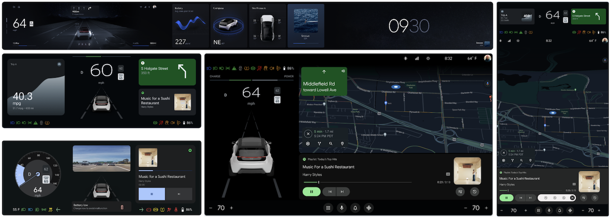
▲ [AOSP 공식 그림] 클러스터와 IVI가 결합된 현대적 DriverUI 화면 예시
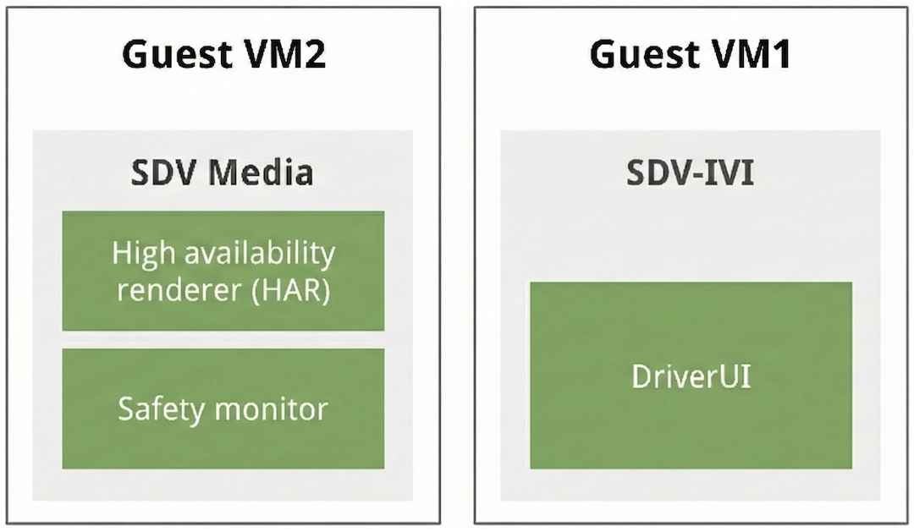
▲ [AOSP 공식 그림] Guest VM2 (SDV Media: HAR + Safety Monitor) vs Guest VM1 (SDV-IVI: DriverUI)
① HAR (High Availability Renderer)
- 언어/렌더러: Rust로 작성, Impeller 그래픽 백엔드 사용
- 역할: 속도, RPM, 경고등(Telltales), 후방 카메라 등 안전/법규 필수 요소를 Cold Boot 직후 즉시 렌더링
- 구조: PAL(Platform Abstraction Layer)을 통해 그래픽, 카메라, 오디오(Chime), 차량 신호(CAN) 추상화
- Android가 죽거나 부팅 중일 때 플레이스홀더/배경을 대신 그림
② DriverUI (Android System App)
- 프레임워크: AAOS
ClusterHomeManager(Cluster 2 API) + Automotive Design for Compose - 역할: HAR가 그리는 안전 요소를 제외한 나머지 전체 클러스터 화면(미디어, 전화, 내비게이션, 날씨 등) 렌더링
- 주기적으로 HAR에
HeartbeatRequestRPC를 전송하여 생존 상태를 알림
③ Safety Design Toolchain & Monitor
- 핵심 가치: HAR와 DriverUI, Safety Monitor가 동일한 단일 Figma 디자인 소스(
.dcf)로부터 생성됨을 보장 - Figma 디자인에서 안전 중요 노드(Telltales)를 추출해 ISO-26262 TCL-3 등급의 MISRA-C Safety Monitor 검증 코드 생성
1-2. HAR + DriverUI 화면 합성(Blending)과 Heartbeat 메커니즘
Hardware Display Plane Compositing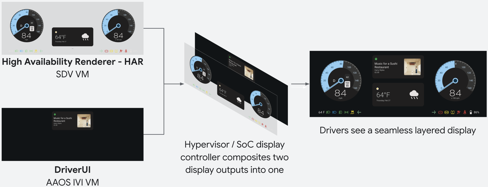
▲ [AOSP 공식 그림] 상단 HAR (SDV VM) + 하단 DriverUI (AAOS IVI VM) → Hypervisor / SoC Display Controller가 하나의 화면으로 합성
💓 Heartbeat 기반 투명도(Transparency) 제어
HAR의 하드웨어 디스플레이 플레인은 안전 중요도 때문에 항상 Android IVI 플레인 위(Top Layer)에 위치합니다.
- 정상 상태 (Heartbeat 수신 중): DriverUI가 주기적으로
HeartbeatRequestRPC를 보내면, HAR는 플레이스홀더/배경을 제거하고 Android 출력 영역을 완전 투명(alpha = 0.0)으로 비워 하단 DriverUI가 투과(See-Through)되게 합니다. - 장애/부팅 상태 (Heartbeat 끊김): DriverUI로부터 Heartbeat가 끊기면 HAR가 즉시 배경 영역을 불투명(
alpha = 1.0)하게 채우고 자체 안전 UI와 플레이스홀더를 표시합니다.
🔍 공식 문서가 강조하는 Alpha 합성 및 Cross-VM 주의사항
- Alpha Punch-Through: HAR가 그리는 게이지/3D 요소는 반드시
alpha = 1.0 (0xFF)이어야 하며, 나머지 영역은alpha = 0.0으로 클리어되어야 하단 Android 레이어가 보입니다. - Cross-VM 디버깅 한계: HAR(
sdv_media_har_cf)와 Android IVI(sdv_ivi_cf_ds)는 서로 다른 Guest VM에서 돌기 때문에, Android에서adb shell dumpsys SurfaceFlinger를 실행해도 상단 HAR 레이어는 보이지 않습니다.
1-3. 단일 Figma 문서 동기화(SDVGateway) 및 테마 RPC 연동
Single Source of Truth (.dcf)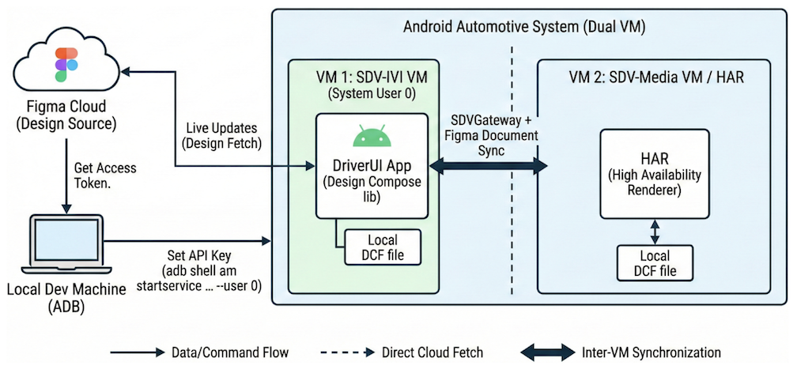
▲ [AOSP 공식 그림] Figma Cloud → DriverUI 로컬 .dcf 업데이트 후 SDVGateway를 통해 VM2(HAR)의 로컬 .dcf까지 동시 동기화
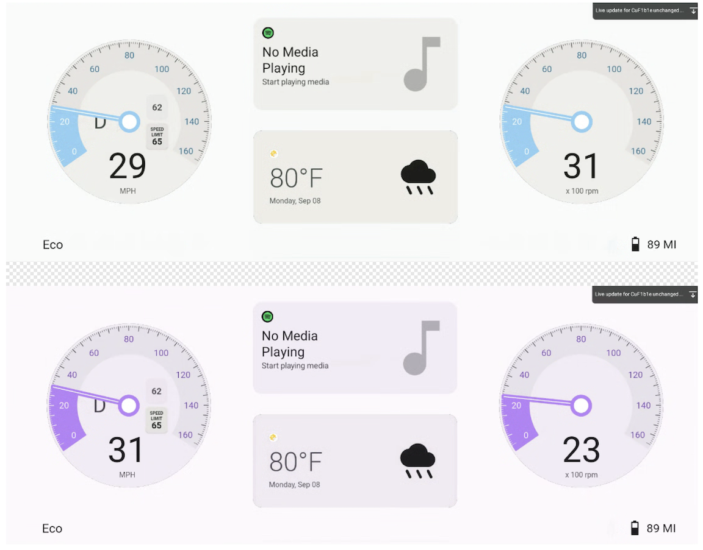
▲ [AOSP 공식 그림] RPC를 통해 DriverUI와 HAR의 테마(Variable Mode)를 동시에 전환
1-4. [심층 해설] Safety Design Toolchain & Safety Monitor란 무엇인가?
ISO 26262 ASIL-B & TCL-3
자동차 기능 안전 표준(ISO 26262 ASIL-B)에서는 "차량 버스에서 브레이크/안전벨트 경고등 신호(ON)를 보냈을 때, 렌더러 버그나 레이어 가림 없이 실제 화면 픽셀에 경고등이 제대로 찍혔는가?"를 검증해야 합니다.
이를 위해 AOSP는 그리는 프로세스(HAR)와 검사하는 프로세스(Safety Monitor)를 분리하고, 동일한 Figma .dcf 파일에서 검사 기준(좌표 + 정답 픽셀)을 자동 추출하는 Safety Design Toolchain을 제공합니다.
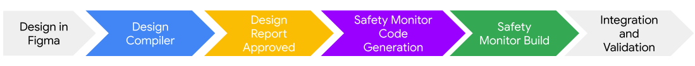
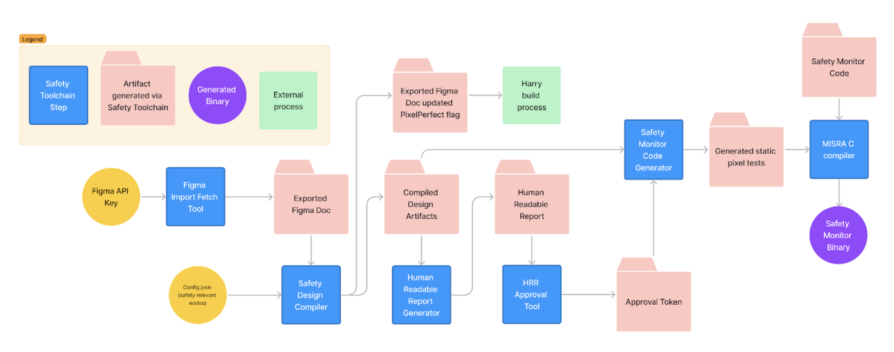
▲ [AOSP 공식 그림] Safety Design Toolchain 파이프라인: Figma .dcf + Config.json → Safety Design Compiler → 엔지니어 육안 검수(HTML Report) 및 SHA-256 승인 토큰 → MISRA-C Safety Monitor 빌드
.dcf + Config.json
차량 신호 이름과 Figma 경고등 노드를 매핑합니다.
예: "seatbelts": "#cluster/telltale/no-seatbelt"
.dcf를 렌더링하며 각 경고등의 정확한 Bounding Box 좌표(data.json)와 조각 이미지(Golden Image PNG)를 추출합니다.
안전 엔지니어가 HTML 리포트의 좌표·스크린샷을 육안 검수 후 approve-hrr로 SHA-256 승인 토큰을 발급합니다.
har_safety_monitor승인된 Golden Image를 C 헤더/바이너리로 컴파일하여, 런타임에 실제 화면 픽셀과 실시간 대조합니다.
왜 Safety Monitor가 HAR와 같은 VM(VM2)에서 도는가? VM이 죽으면 둘 다 죽지 않나?
A. ISO 26262의 ASIL 분해(Decomposition: QM + ASIL-B) 원리 때문이며, 감시 대상이 다릅니다!
-
왜 HAR 자체는 QM(일반 품질)인가?
HAR는.dcf파서, 레이아웃 엔진, Impeller GPU 렌더러 및 OpenGL/Vulkan 드라이버를 포함합니다. 수백만 줄에 달하는 GPU 그래픽 스택 전체를 ASIL-B로 인증받는 것은 사실상 불가능합니다. -
소프트웨어 그래픽 버그 감시 (Safety Monitor · ASIL-B):
따라서 복잡한 GPU 스택을 쓰는 HAR(그리는 놈, QM)와, GPU 없이 순수 CPU로 최종 프레임버퍼 메모리의 몇 바이트만 읽는 Safety Monitor(감시하는 놈, ASIL-B MISRA-C)를 별도 프로세스로 분리합니다. 만약 셰이더 버그나 알파 합성 오류로 경고등이 안 그려지면 Safety Monitor가 즉시 잡아냅니다. -
VM2 전체 다운/프리징 감시 (외부 Safety MCU 하드웨어 Watchdog):
만약SDV Media VM자체가 커널 패닉이나 무한 루프에 빠지면 Safety Monitor도 멈추며, 이때는 외부 하드웨어 Safety MCU(마이컴) / Display Controller CRC 체커가 Watchdog 타임아웃을 감지해 하드웨어 차원의 안전 조치를 수행합니다.
골든 이미지는 정적(Static) 이미지인데, 실시간으로 변하는 화면과 어떻게 픽셀 비교를 하는가?
A. 전체 화면(1920×720)을 비교하는 것이 아니라, 오직 고정 좌표의 작은 경고등 영역(ROI Bounding Box)만 잘라 투명 픽셀을 제외하고 비교합니다!
-
① 작은 사각형(Bounding Box) ROI 크롭 비교:
속도 숫자나 게이지 바늘이 움직이는 영역은 검사하지 않습니다.data.json에 기록된 고정 좌표(예:X: 72, Y: 674, Width: 45, Height: 45)의 45×45 픽셀 조각(안전벨트, ABS 등 Telltale 아이콘 위치)만 읽습니다. -
② 투명 픽셀 마스킹 (Alpha Masking):
AOSP 공식 문서 명시: "The safety monitor might ignore the transparent pixels in these images for the purposes of run-time pixel tests."
즉, 45×45 골든 이미지에서 투명한 배경 픽셀(alpha == 0)은 무시하고, 불투명한 빨간색/노란색 아이콘 획(Stroke) 픽셀만 실제 프레임버퍼 픽셀과 대조합니다.
▲ ① 추출된 45×45 Golden Image
(#cluster/telltale/no-seatbelt)
흰색/투명 영역은 무시하고 빨간 픽셀만 검사
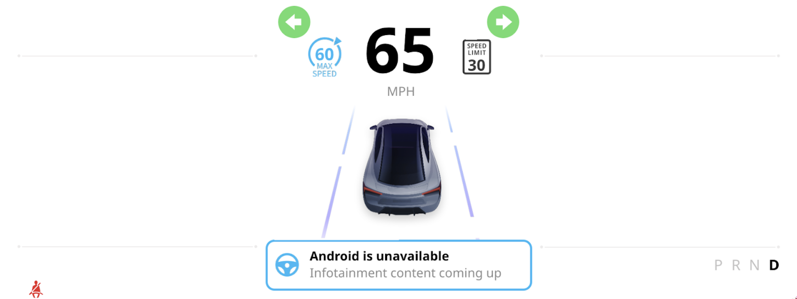
▲ ② 전체 클러스터 화면(1920×720) 중 좌측 하단 (72, 674)의 45×45 영역만 Crop하여 대조
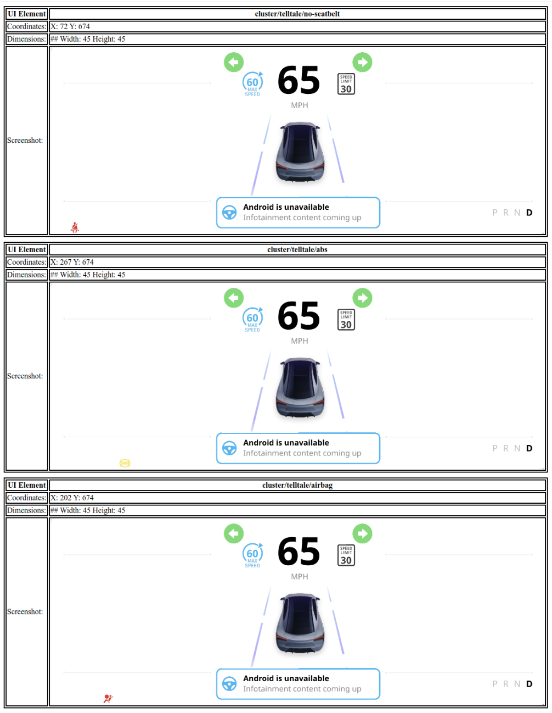
▲ ③ 안전 엔지니어 검수용 HTML 리포트
(각 Telltale의 X, Y, Width, Height 명시)
2부. 단일 Android 개발 환경 제약을 고려한 DesignCompose POC 구현 및 비교 분석
일반 Android 앱 개발 환경(단일 VM 에뮬레이터)에서는 Hypervisor나 SDV Media VM(Rust + Impeller)을 직접 구동할 수 없습니다.
따라서 현재 Android 개발 환경에서 검증 가능한 핵심 아키텍처(단일 .dcf 분리 렌더링, Rust dc_layout, HAR Data-Driven 제약, See-Through & Failover)를 최대치로 시뮬레이션했습니다.
2-1. [핵심 요약] 공식 양산 Dual-VM 아키텍처 vs 본 POC 비교 (Same · Similar · Different)
| 아키텍처 영역 | 비교 판정 | 1부: AOSP 공식 Dual-VM (Production SDV) | 2부: 본 DesignCompose POC (Single Android VM) |
|---|---|---|---|
1. 디자인 소스 (.dcf) |
동일 (Same) | 단일 Figma 문서를 직렬화한 .dcf 번들을 VM1(DriverUI)과 VM2(HAR)가 공유 |
100% 동일한 공식 .dcf 파일(CuF1b1eAIukB6YszX6B5OZ.dcf)에서 #HAR-stage와 #android-stage를 각각 로드 |
| 2. Rust 파서 & 레이아웃 엔진 | 동일 (Same) | Rust 크레이트(dc_bundle, dc_layout)가 .dcf 노드 트리와 레이아웃 계산 |
JNI를 통해 동일한 Rust dc_bundle + dc_layout 엔진이 레이아웃과 Variant 트리를 계산 |
| 3. HAR의 Data-Driven 인터페이스 | 동일 (Same) | HAR는 Jetpack Compose가 없으므로 스칼라 신호(속도, 경고등)와 Variant 상태만 주입받음 | ClusterDualVmStage.kt의 harStage에서 @Composable 교체 람다를 전면 배제하고 오직 @Design 데이터와 @DesignVariant만 허용 |
| 4. 투명 배경 & Failover 레이어 구조 | 동일 (Same) | #HAR-stage는 기본 투명(alpha = 0.0)이며, Heartbeat 상실 시 불투명 배경(#heartbeat=off) 표시 |
해킹(BlendMode) 없이 .dcf 내부의 BackgroundLayer(#heartbeat=off) 가시성 제어만으로 Native See-Through 및 Failover 구현 |
| 5. 테마(Variable Mode) 동시 전환 | 동일 (Same) | Figma Variable Collection(Dark / Light)을 통해 HAR와 DriverUI 테마를 동시 변경 |
DesignVariableModeValues로 Dark / Light 모드를 두 Stage에 동시 적용 |
| 6. 2-Plane 디스플레이 합성 | 유사 (Similar) | Hypervisor / SoC Display Controller가 하단 IVI Plane과 상단 HAR Plane을 하드웨어 합성 | 단일 화면의 2-Layer Z-Order Stack에서 하단 Plane 1(DriverUiIviStage) 위에 상단 Plane 2(HarSafetyStage)를 오버레이 |
| 7. Heartbeat Watchdog & RPC | 유사 (Similar) | VM 간 RPC(HeartbeatRequest) 타임아웃 감지 시 HAR가 불투명 모드로 전환 |
시뮬레이터 HUD의 Kill IVI (Crash) 토글이 Heartbeat 단절(iviFaultActive = true)을 트리거하여 즉시 Failover 재현 |
| 8. HAR 실행 OS 및 그래픽 렌더러 | 차이 (Different) | Non-Android VM (SDV Media VM) 위에서 순수 Rust 앱 + Impeller 렌더러로 구동 | 단일 Android 에뮬레이터 환경 제약상 Android 프로세스 내 DesignCompose Squoosh (Compose Canvas) 렌더러로 구동 |
| 9. 차량 신호(CAN) 및 Safety Monitor | 차이 (Different) | PAL이 실제 차량 CAN 신호를 수신하고, MISRA-C Safety Monitor가 픽셀 출력 검증 | ClusterDualVmSimulator.kt가 60fps 연속 속도/RPM/경고등 신호를 시뮬레이션하여 주입 |
2-2. 왜 코드를 두 파일(Stage vs Simulator)로 분리했는가?
Tech-Talk 코드 명확성
발표에서 청중이 "양산과 동일한 순수 .dcf 바인딩 영역"과 "단일 Android 환경 제약을 극복하기 위한 시뮬레이터 영역"을 한눈에 구분할 수 있도록 파일을 엄격히 분리했습니다.
일반 Jetpack Compose UI 위젯(Box, Row, Text, Canvas)을 단 하나도 import하지 않는 순수 선언부입니다.
특히 HarSafetyStage는 Non-Android VM에서 동작하는 HAR의 제약을 반영해 오직 스칼라 데이터와 Variant만 받습니다.
@DesignComponent(node = "#HAR-stage")
fun harStage(
// 서브트리 교체 (Variant): 레이아웃/래퍼 전환
@DesignVariant(property = "#har-variant")
harVariant: ClusterHARVariant.HarVariant,
@DesignVariant(property = "#wrapper-variant")
wrapperVariant: ClusterHARVariant.WrapperVariant,
// Heartbeat Failover 제어 (#heartbeat=off 배경)
@Design(node = "BackgroundLayer")
showFallbackBackground: Boolean,
// 연속 스칼라 데이터 (CAN 텔레메트리)
@Design(node = "#driving/speed") speed: String,
@Design(node = "#driving/speedo-gauge") speedGauge: Meter,
@Design(node = "#telltale/abs") abs: Boolean,
// ... (@Composable 교체 람다 0개!)
)단일 Android 앱 안에서 ① Hypervisor 2-Plane 하드웨어 합성기, ② 60fps CAN 신호 발생기, ③ Heartbeat 장애 주입기 역할을 대신 수행하는 하네스입니다.
// Hypervisor Display Controller의 2-Plane 합성 시뮬레이션
Box(modifier = Modifier.requiredSize(1920.dp, 720.dp)) {
// Plane 1 (Bottom Layer): Guest VM 1 - Android DriverUI
if (!iviCrashed) {
DriverUiIviStage(panel1, panel2, panel3, ...)
}
// Plane 2 (Top Overlay): Guest VM 2 - HAR Safety Stage
// #HAR-stage는 기본 투명(alpha=0)이므로 하단 Plane 1이 투과됨!
// iviCrashed == true이면 BackgroundLayer가 켜지며 단독 동작
HarSafetyStage(
telemetry = telemetry.copy(iviFaultActive = iviCrashed),
harVariant = harVariant,
wrapperVariant = wrapperVariant,
)
}2-3. 시뮬레이션 검증 ①: HAR의 Data-Driven 서브트리 교체 (@DesignVariant)
Composable 교체 없이 데이터만으로 UI 트리 전환
HAR에는 Jetpack Compose 코드가 없는데 어떻게 원형 게이지(Retro), 3분할 슬림 뷰(Thin), 후방 카메라 뷰(ModernCamera)로 화면 구조가 바뀔까요?
정답은 .dcf 파일 안에 모든 레이아웃 서브트리가 미리 직렬화되어 있고, 런타임에는 #har-variant라는 Enum 데이터 하나만 바꿔서 트리를 교체하기 때문입니다.
트리가 통째로 바뀌어도 내부의 데이터 홀더(#driving/speed = "34")는 모든 Variant 트리에 동일하게 존재하므로 34 MPH 데이터가 그대로 유지됩니다.
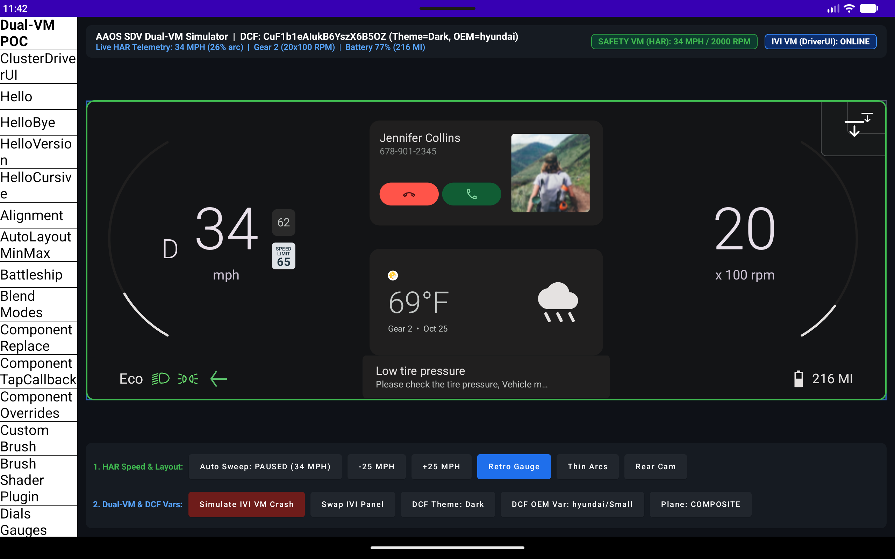
HarVariant.Retro + Full듀얼 원형 아날로그 바늘 게이지에서도 #driving/speed = 34 바인딩 유지
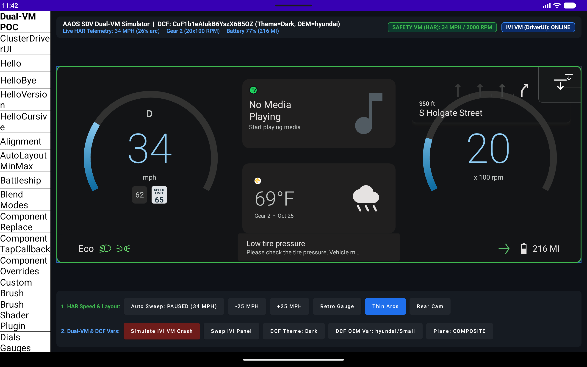
HarVariant.Thin + Thin3-Panel 미디어/내비게이션 확보용 슬림 레이아웃에서도 동일하게 34 MPH 표시
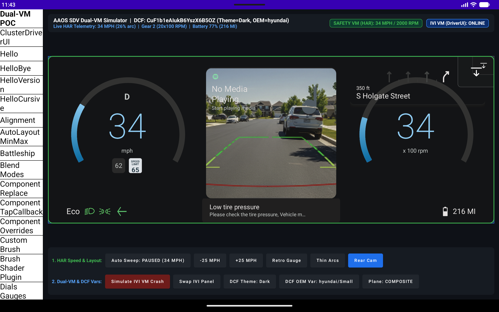
HarVariant.ModernCamera + Full후방 카메라 뷰포트가 포함된 서브트리로 즉시 전환되며 34 MPH 유지
2-4. 시뮬레이션 검증 ②: 1부 공식 문서의 Alpha See-Through & Heartbeat Failover 재현
AOSP 공식 합성 시나리오 100% 재현
1부 공식 문서의 "Blend HAR and DriverUI output" 및 "RPC theme change" 다이어그램과 똑같은 동작을 단일 CuF1b1eAIukB6YszX6B5OZ.dcf로 검증한 결과입니다.
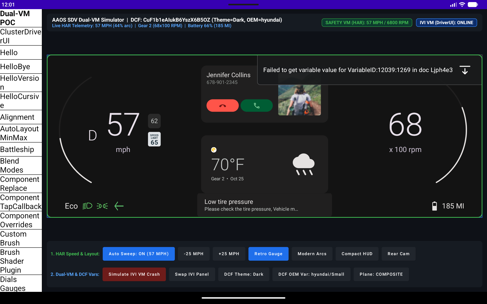
상단 #HAR-stage의 배경이 투명(alpha = 0.0)하여 하단 #android-stage의 Media · Call · Navigation 카드가 자연스럽게 투과됩니다.
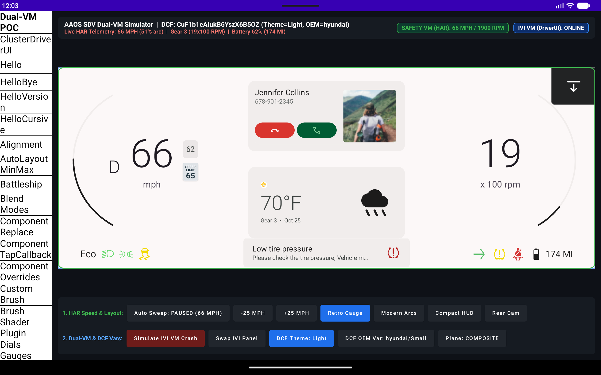
1부 공식 문서의 RPC 테마 동기화 그림처럼, Figma Variable Mode를 Light로 바꾸면 HAR 게이지와 DriverUI 카드가 동시에 밝은 테마로 전환됩니다.
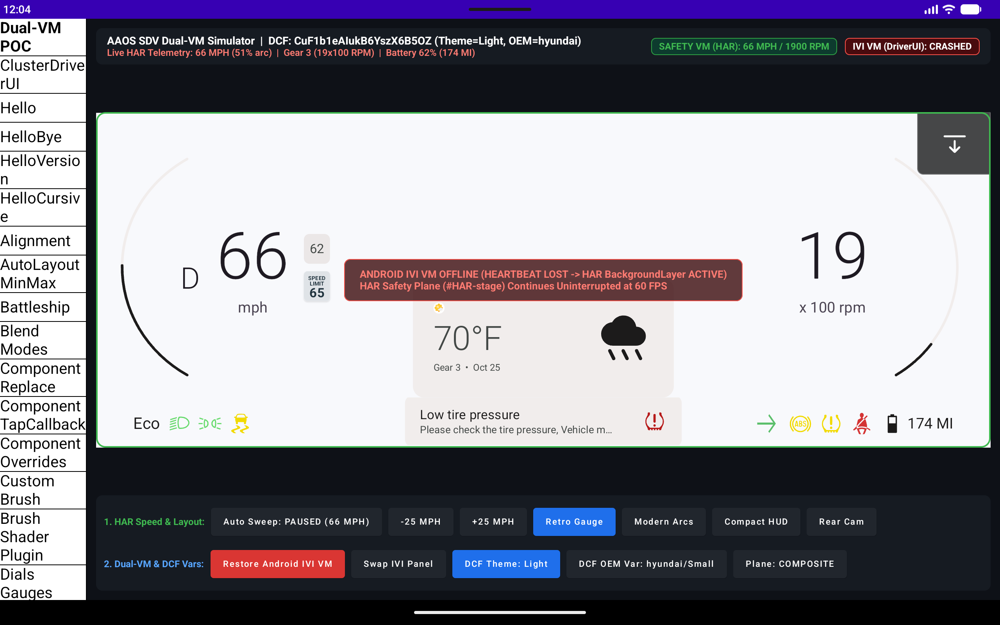
DriverUI가 중단되면 #HAR-stage 내부의 BackgroundLayer(#heartbeat=off)가 불투명하게 켜지며, 속도계(69 MPH)와 경고등이 끊김 없이 단독 동작합니다.
🎯 Tech-Talk 결론 (Key Takeaways)
-
AOSP 공식 SDV Display Safety의 핵심은 디자이너가 작업한 단 하나의 Figma 문서(
.dcf)를 가지고 Safety VM의 HAR(Rust + Impeller), Android VM의 DriverUI(DesignCompose), 그리고 Safety Monitor(ASIL-B 검증기)를 일관되게 구동하는 것입니다. -
비록 일반 Android 개발 환경에서는 Hypervisor와 별도 Guest VM을 직접 띄울 수 없지만,
본 POC를 통해 단일
.dcf기반의 2-Stage 분리(#HAR-stage/#android-stage), Rustdc_layout엔진, HAR의 100% Data-Driven 렌더링(스칼라 + Variant 트리 스왑), 그리고 Heartbeat 기반 Native See-Through 합성까지 양산 아키텍처의 핵심 메커니즘을 그대로 검증할 수 있음을 확인했습니다.